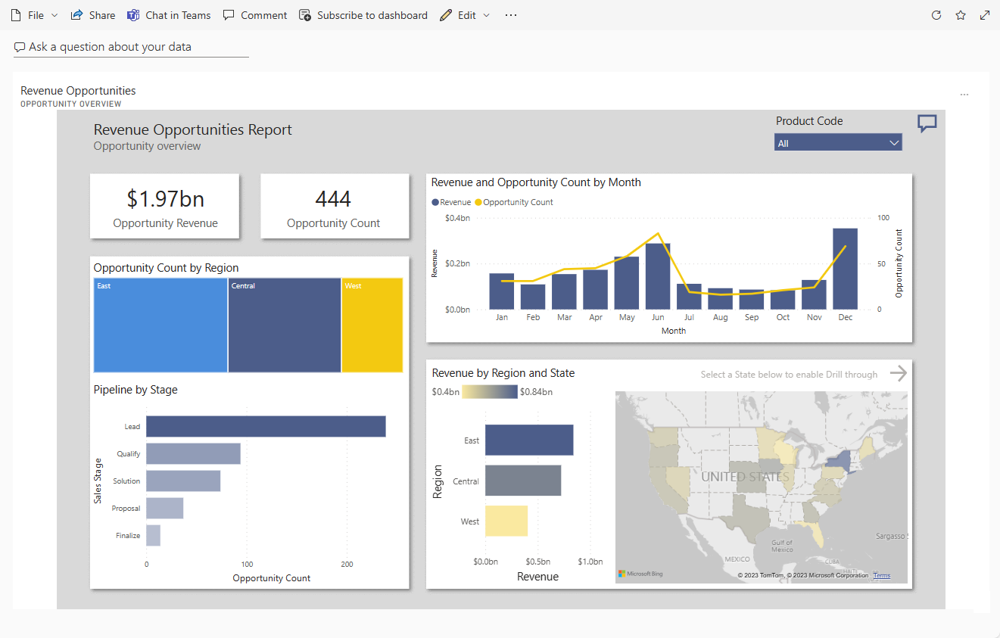

Revenue Opportunity Dashboard
Using Power BI to identify revenue opportunities and support data-driven decisions.
This project involved building an interactive Power BI dashboard to help business stakeholders identify and track revenue opportunities across products, regions, and customer segments. The goal was to provide a clear, data-driven view of where growth potential exists — enabling teams to prioritise high-value initiatives and align sales and marketing efforts more effectively.
Project Summary
Project Type
Data Visualisation
Primary Tool
Power BI
Supporting Tools
Excel, DAX
Main Focus
Revenue Opportunity Tracking
Project Objectives
The dashboard was designed to address these core business needs.
- Identify potential revenue opportunities across products, regions, and customer segments.
- Monitor financial performance through clear KPIs and trend visualisations.
- Help stakeholders prioritise strategic initiatives using actionable data insights.
- Align sales and marketing efforts to areas of highest revenue potential.
Tools & Skills Used
Full toolkit applied across this project.
Interactive dashboard development, visualisations, and slicers
Data cleaning, calculations, and dataset preparation
Advanced measures for revenue growth rate, opportunity gap, and forecasted revenue
Data & Sources
The following data categories were used to build the dashboard.
Historical Sales Data
Transaction-level sales records covering revenue figures, product categories, geographic regions, and customer segments — used to analyse performance trends and identify where revenue opportunities exist.
Marketing & Sales Campaign Data
Campaign and sales activity data used to understand opportunity trends — helping to contextualise revenue performance alongside commercial activity across regions and product lines.
Analysis & Features
Four core analytical areas were built into the dashboard.
Revenue Trend Analysis
Visualised monthly, quarterly, and yearly revenue trends to surface growth patterns and highlight periods of decline across the dataset.
Opportunity Gap Analysis
Identified potential revenue opportunities by comparing actual versus target revenue across regions and product lines to highlight underperforming areas.
Top-Performing Products & Regions
Highlighted the products and regions driving the highest revenue, helping stakeholders focus investment and resource allocation effectively.
KPI Metrics
Key performance indicators including total revenue, average deal size, opportunity conversion rate, and forecasted revenue presented as prominent dashboard cards.
Power BI Dashboard
The dashboard below presents the Revenue Opportunities Report — an interactive Power BI report covering opportunity overview, revenue and opportunity count by month, opportunity count by region, pipeline by sales stage, and revenue by region and state.

Revenue Opportunities Report — Power BI dashboard presenting opportunity revenue KPIs, monthly trends, regional breakdowns, pipeline stages, and geographic distribution.
Conclusion
Key outcomes and intended impact of the Revenue Opportunity Dashboard.
The dashboard gives decision-makers a consolidated view of revenue opportunities across products, regions, and customer segments — reducing the time needed to identify where growth potential exists.
Revenue trend visuals support more informed forecasting by making monthly, quarterly, and yearly performance patterns immediately visible to stakeholders.
The opportunity gap analysis helps teams prioritise underperforming regions and product lines by comparing actual revenue against targets.
The interactive nature of the dashboard supports alignment between sales and marketing teams by providing a shared, data-driven view of pipeline stages and revenue performance.